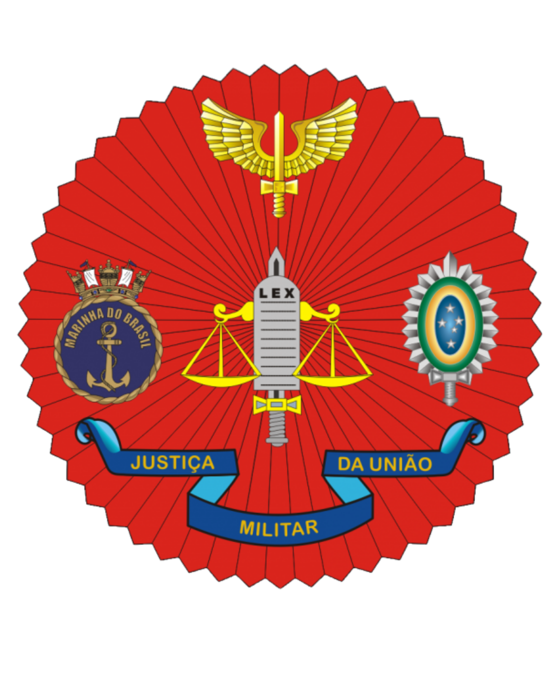

Visita Institucional · 2026
Almirante de Esquadra Leonardo Puntel Ministro do Superior Tribunal Militar
Ex-Comandante de Operações Navais da Marinha do Brasil. Agenda de compromissos na área do Comando do 3º Distrito Naval, com eventos em João Pessoa, Fortaleza e Recife.
Hora local
--:--:--
BRT · UTC−3
Data
--
Atualização automática pelo relógio do dispositivo
Agenda consolidada para apoio ao acompanhamento da visita institucional.
Situação da agenda
O sistema identifica automaticamente o evento em andamento e o próximo compromisso cadastrado.
Eventos da visita
Contagem regressiva calculada diariamente para cada compromisso.
Atenção: este projeto foi preparado para uso em repositório GitHub, preferencialmente privado, por conter agenda de autoridade. Não habilite publicação pública sem autorização.